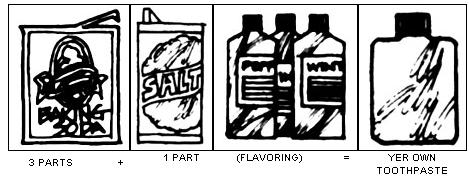
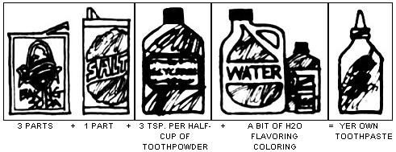

Proctor and Gamble and Lever Brothers-and any number of other manufacturers-would like us to believe that the only proper way to care for our teeth is with expensive, highly flavored toothpastes that come in non-biodegradable, throwaway, zinc-and-lead tubes. T'ain't so!
There are effective, low-cost alternatives to that aromatic goo-in-a-tube you find on supermarket shelves. Our family has been making and using its own toothpastes and powders for years . . . and we've enjoyed excellent dental health, too. You and your clan can save a significant amount of money-and at the same time keep your teeth and gums in good shape-by kicking the Madison Avenue habit and choosing to follow a few simple rules:
[1] MAKE THE MOST OF BRUSHING. The actual mechanical brushing and flossing of your teeth and gums is much more important than which (if any) cleaning agent is employed. Don't take brushing lightly . . . go at it with a vengeance. Keep your Py-Co-Pay, or whatever, relatively dry and scrub your teeth thoroughly for at least two-and-a-half minutes, three times a day. Don't waste whatever dentifrice you' use . . . in the long run, you and your budget will be healthier.
[2] USE TOOTH POWDER. The dry dental powders that currently seem to be out of vogue are fairly inexpensive and come in refillable dispensers. The products are mostly made of chalk (a mild abrasive), flavoring and a small amount of soap dust for cleansing purposes. Just shake a nickel-sized amount into the palm of your hand, dip a dampened brush into the substance and scrub your choppers vigorously.
[3] MAKE YER OWN TOOTH POWDER. Thoroughly mix 3 parts baking soda (the cleanser and sweetener) with 1 part salt (the abrasive) and funnel the compound into a short small-mouthed container such as a pop or beer bottle. You'll find that the creation has a satisfying, different taste and aves your mouth feeling very fresh and soothed. If you'd like, add a few drops of peppermint or wintergreen oil to the concoction-or mix the home "brew" half-and-half with a commercial tooth powder-to give the dentifrice a more pleasant flavor.
[4] MAKE YER OWN TOOTHPASTE. This formula is simply an extension of the tooth powder recipe: To each half cup of homemade powder, add 3 teaspoons of glycerin, 10-20 drops of flavoring (peppermint, wintergreen, anise, cinnamon or whatever) and 1 drop of food coloring. Mix the ingredients thoroughly in a bowl and add just enough water to make the concoction "tooth-pastey". Spoon the substance into a small refillable plastic squeeze bottle or any container that dispenses easily and won't leak. Voila! Toothpaste!
The amount of glycerin you add will control the "pastiness" of the cleanser and obviously the type of flavoring will determine the taste. Both ingredients are inexpensive and available at any drugstore. Your neighborhood grocer, of course, can supply you with salt, food coloring and baking soda.
Commercial toothpastes generally incorporate a slick, easyflowing combination of chalk, soap, glycerin and flavorings. Your homemade creation won't be as smooth . . . but I know you'll find it more satisfying, less wasteful and-above all-less expensive. You'll be able to make a year's supply of toothpaste (for a family of four) at a total cost of around a buck and a half.
The formulas I've outlined here have worked well for my family . . . but don't be afraid to experiment and work up your own recipes. You could, for example, add a very small amount of Basically (a Shaklee organic product) or powdered soap to give your home dentifrice extra cleaning power. We've never found this necessary, but it should work.
A little experience and imagination can go a long way. See what you can do to produce your own homemade milliondollar smiles . . . and let me know what happens!
|
 |
 |
|